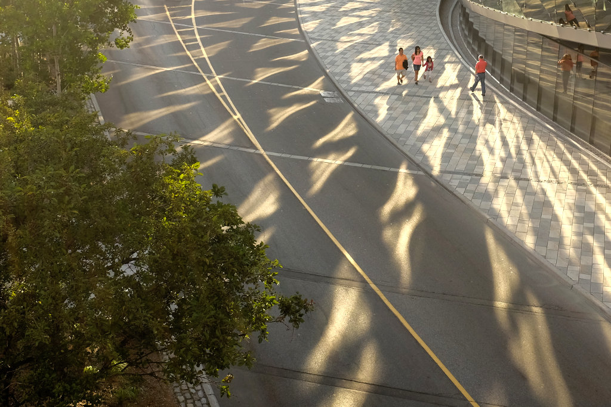
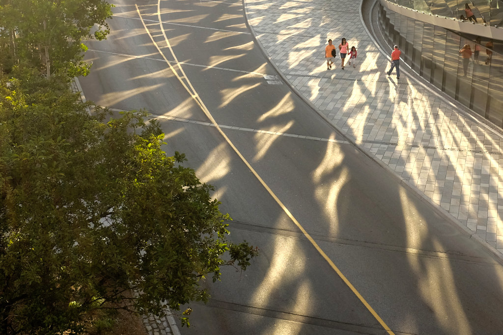
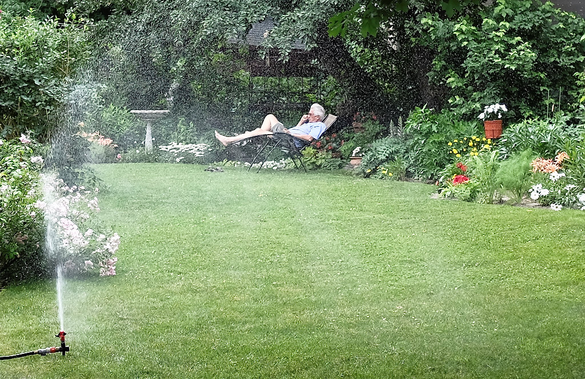
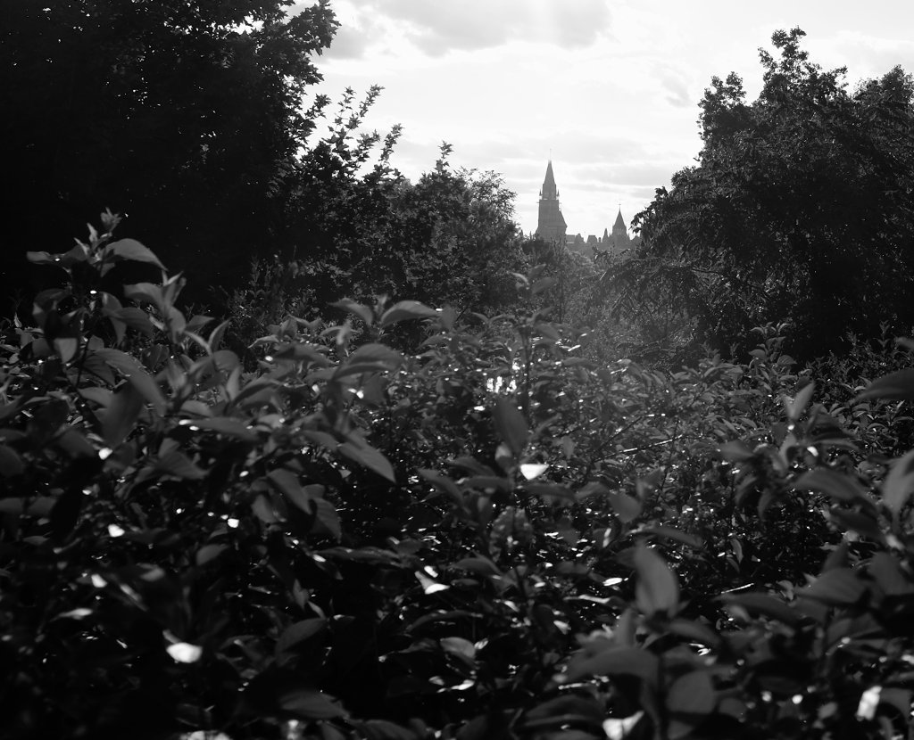
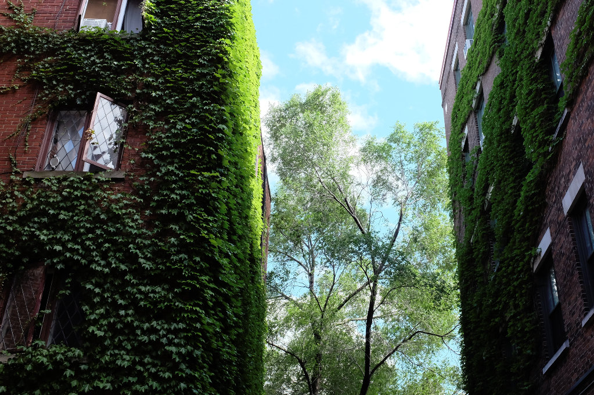
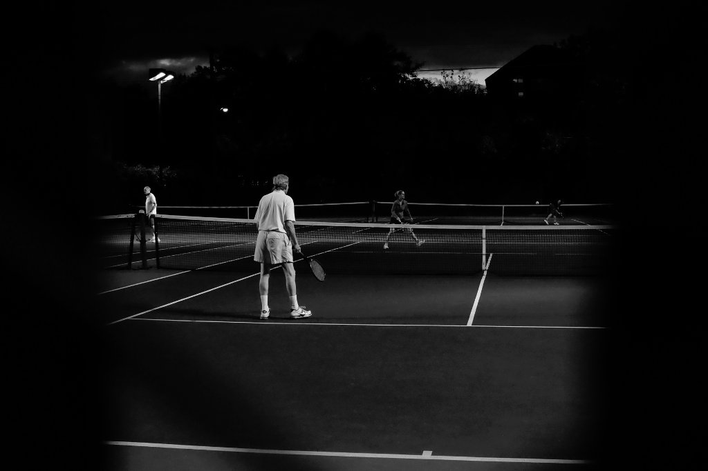
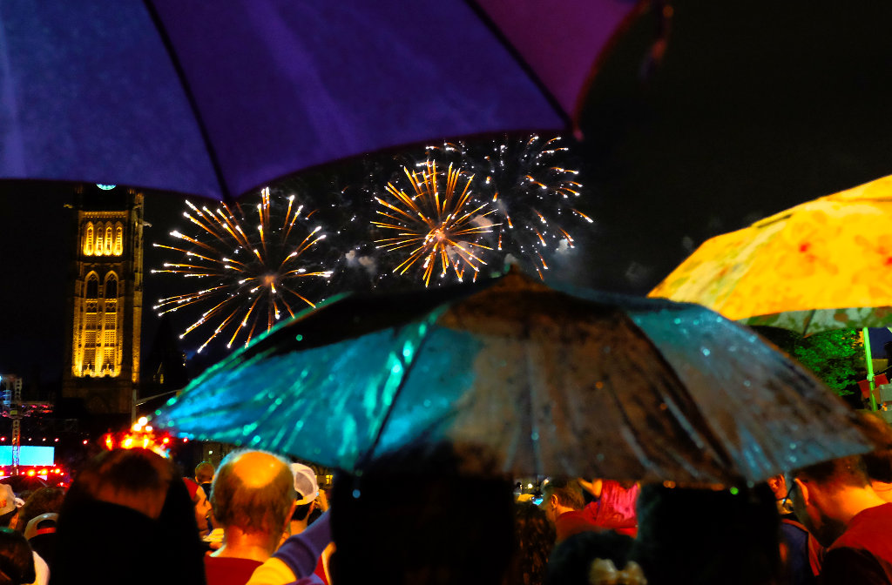
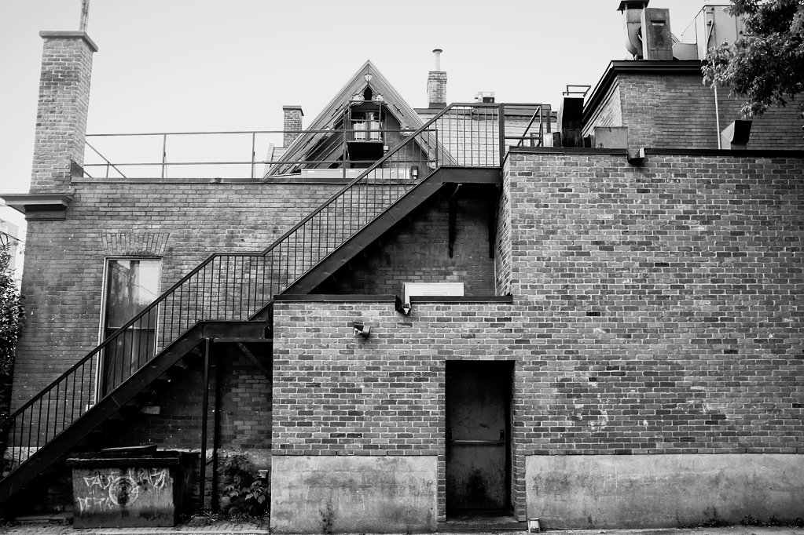
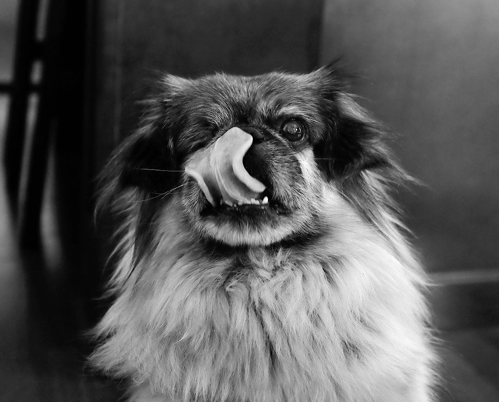
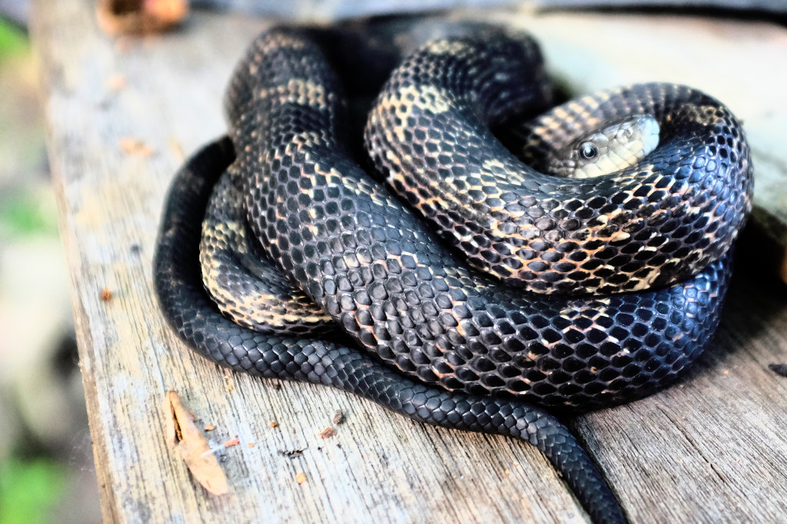

Day 63

Taken July 9th, 2014
Ottawa, Canada
Fuji X100s 23mm 1/125 @ f/5.6 ISO 250
Taken July 9th, 2014 Ottawa, Canada Fuji X100s 23mm 1/125 @ f/5.6 ISO 250...
Photo-a-day by Matt Thompson started May 8th, 2014.

Taken July 9th, 2014
Ottawa, Canada
Fuji X100s 23mm 1/125 @ f/5.6 ISO 250
Taken July 8th, 2014
Ottawa, Canada
Fuji X100s 23mm 1/50 @ f/2.7 ISO 6400
Taken July 7th, 2014
Ottawa, Canada
Fuji X100s 23mm 1/15 @ f/5.6 ISO 200

Taken July 6th, 2014
Ottawa, Canada
Fuji X100s 23mm 1/500 @ f/2.0 ISO 250

Taken July 5th, 2014
Ottawa, Canada
Fuji X100s 23mm 1/2000 @ f/4.0 ISO 200

Taken July 4th, 2014
Ottawa, Canada
Fuji X100s 23mm 1/125 @ f/8.0 ISO 1000

Taken July 3rd, 2014
Ottawa, Canada
Fuji X100s 23mm 1/200 @ f/4.0 ISO 3200
Taken July 2nd, 2014
Ottawa, Canada
Fuji X100s 23mm 1/250 @ f/8.0 ISO 200

Taken July 1st, 2014
Ottawa, Canada
Fuji X100s 23mm 1/15 @ f/4.0 ISO 5000

Taken June 30th, 2014
Ottawa, Canada
Fuji X100s 23mm 1/200 @ f/2.7 ISO 200

Taken June 29th, 2014
Narrows Lock, near Ottawa, Canada
This character is named Monty.
Fuji X100s 23mm 1/100 @ f

Taken June 28th, 2014
Narrows Lock near Ottawa, Canada
Fuji X100s 23mm 1/125 @ f/2.7 ISO 2500